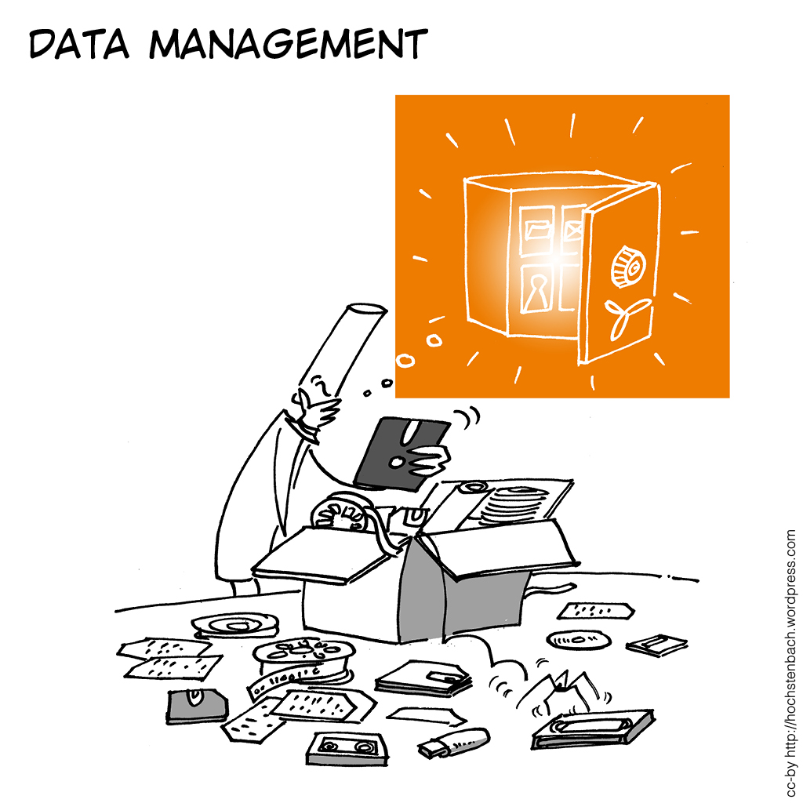

The EAWAG Research Data Platform
(ERDP)
— start of the pilot phase —
What it is not
TODO: symbolic ER-diagram
A homogenized, well-structured, relational database that
you could query like:
Give me all pH - values where we also have turbidity and discharge is < 20 m3/s.
And plot them. In blue. With yellow dots. On a logarithmic scale.
- That would be impossible, EAWAG-wide.
- That doesn't solve our problem
What is it then?
TODO: pic with a package.
A collection
of
"Data
Packages".
The system doesn't have to look into the files.
no selection/search/analysis based on dataset content.
technically, everything can be dumped into a package, without any pre-processing.

 Some file-formats should be avoided, though!
Some file-formats should be avoided, though!
authors: ...
date of submission: ...
temporal coverage: ...
spatial coverage: ...
status: ...
date of submission: ...
temporal coverage: ...
spatial coverage: ...
status: ...
Variables: ...
Systems: ...

package = files + meta-data
"resources" = files
- search for packages is based on meta-data.
- interaction with other repositories and services relies on meta-data.
- other "meta-data", e.g., units of variables, should go into a resource (= file).
How is it organized?
TODO: picture illustrating how Organizations with can be
Groups or Departments, hirarchy.
"Organizations"
=
Departments
+
Research Groups
=
Departments
+
Research Groups
Organizations
- are, ideally, comparatively homogeneous with resepect to data-management needs.
- can, ideally, be handled by 1 - 2 "Data Managers".
TODO: picture illustrating the interplay between ERDP,
Data Managers, Researchers, and Project.
"Data Managers"
- are the link between Researchers, the Platform, and the Project.
- are ERDP - administrators for their organization.
- number preferably 1 - 3 per organization.
- ideally have
- some data-wrangling skills.
- prolonged stay at Eawag.
- good overview of organizations' research-activities.
How does it look like?
What about automating things?
How does it fit into the technical ecosystem?
TODO: Picture illustrating interplay with Lib4Ri-repo,
EMP-EAW-storage, alternative storage backends, external
repositories & archives.
Whatsoftware is that based on?
TODO: picture CKAN technology stack
Why CKAN?
Non-options:
=> Obviously bad ideas!
- Commission proprietary custom
development. - In-house custom development from scratch.
=> Obviously bad ideas!
Expect:
=> Customization of well-established open-source software!
- Changing requirements.
- Need for in-house capacity for software development.
- Need for
continuous adaption & refinement ...
... inseparable from tight user-involvement. - Complexity of the system that maxes out available resources.
=> Customization of well-established open-source software!
Evaluation criteria
- mature software
- active developer community
- large user-base
- reasonably modern technology stack
- maximum overlap with Eawag requirements
Taking into account criteria 1. - 4. the following contenders are left:
| Name | Comment |
|---|---|
| Islandora | Lack of demonstrated ability to deal with datasets (as opposed to publications) |
| Ivenio | |
| DSpace | Lack of geospatial
capabilities, smaller user-base |
| Dataverse |
Time-line & Outlook
March 21 — Dec 31: Pilot-Phase
- Experimentation with various dataset types.
- Further development of ERDP.
- Development of client-side helper tools.
- Development of workflows.
- No data-safety!
- No interface-stability!
- Motivate potential data-managers to show up for launch-event:
New features until 2017
- Significant development is planned to take place during this year.
- Some
features are already planned, but concrete
implementation and yet unknown needs will
emerge. E.g.:
- version control for resources
- strong backup
- interfacing with public repositories (Zenodo, Dryad, ...)
- public facing server / Open Data
- ldap authentification
- user-friendly spatial input
- ...
Questions?
